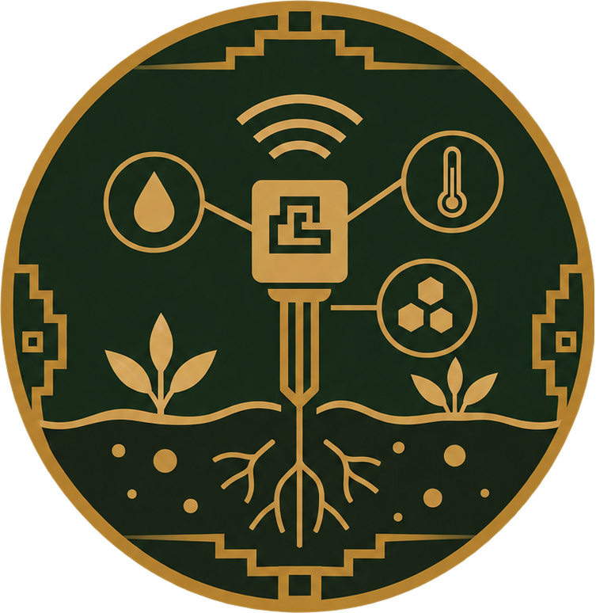
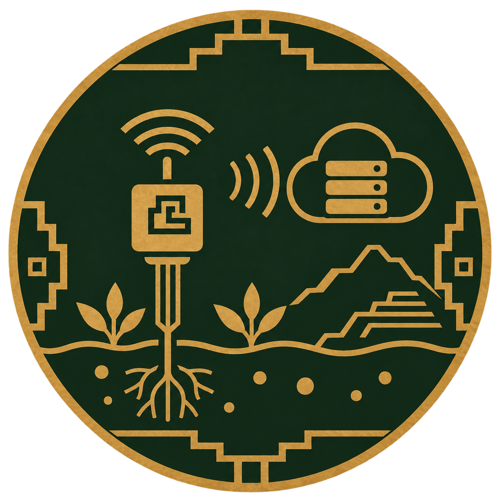
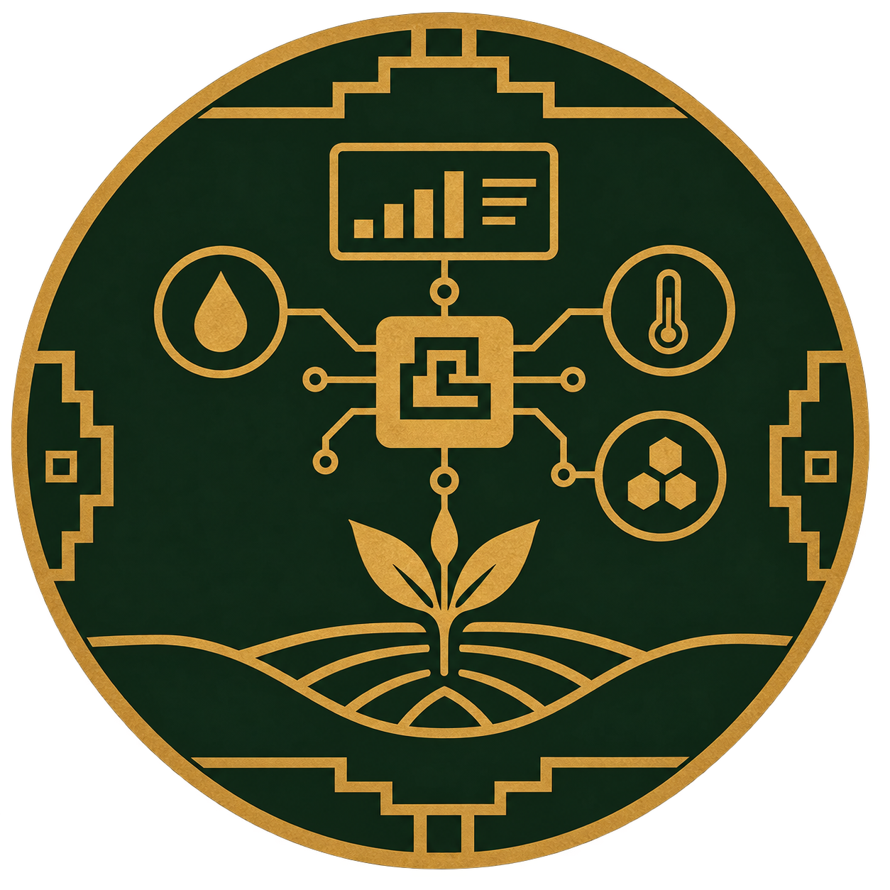
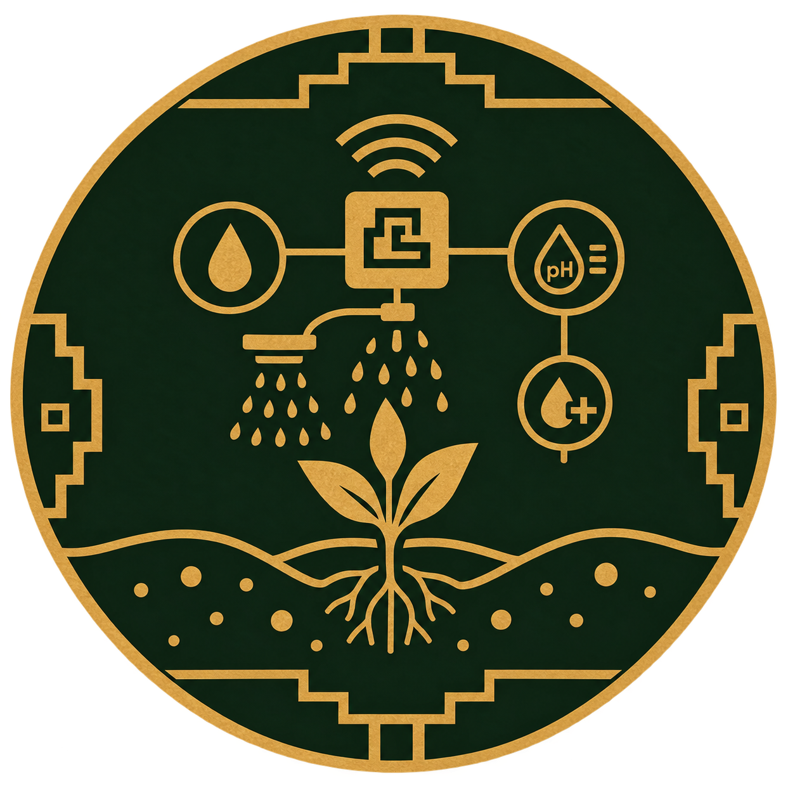
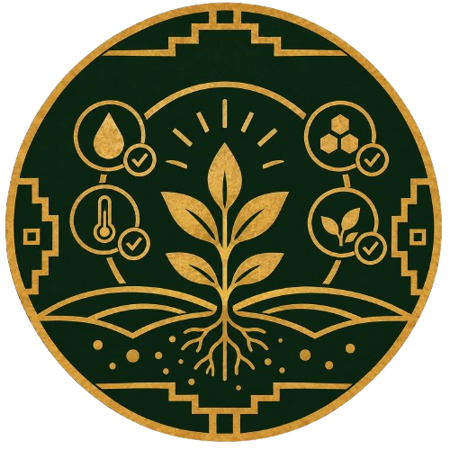
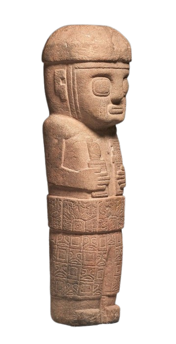
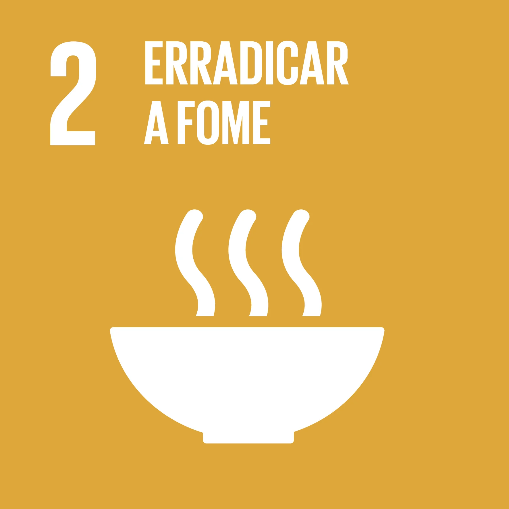

Tecnologia & Tradição
Tecnologia ancestral.
Precisão que cultiva o futuro.
Conheça uma nova forma de cuidar da terra, unindo a sabedoria ancestral dos Incas à tecnologia agrícola.
Conheça o projetoIntrodução ao projeto
O AllpaSense é um sistema composto por sensores de solo e uma plataforma simples que interpreta os dados e age quando necessário — irrigando, sugerindo correções de acidez ou alertando para deficiências de nutrientes. Tudo pensado para ser acessível, de baixo consumo e com instalação intuitiva.
O ciclo AllpaSense
Arraste para acompanhar cada processo

Envio

Análise

Ação

Resultado
Sensores medem a umidade, a temperatura e os nutrientes presentes no solo.
Conceitos principais
Monitoramento contínuo
Dados em tempo real permitem decisões precisas — rega no momento certo, correção de pH quando necessário e acompanhamento dos nutrientes.
Automação prática
Regras simples transformam leitura em ação: sistemas de irrigação podem ser acionados automaticamente, reduzindo trabalho e desperdício.
Design rural-friendly
Hardware resistente, bateria de longa duração e conectividade otimizada para áreas com pouca infraestrutura.

Relação com a Civilização Inca
A relação entre o INTI Agro e a civilização Inca nasce de uma mesma ideia: entender a terra para cultivá-la melhor. Os Incas desenvolveram técnicas agrícolas avançadas para aproveitar diferentes condições de altitude, clima e disponibilidade de água, utilizando terraços agrícolas e sistemas de manejo da água.
Inspirado nesse conhecimento, o AllpaSense leva essa preocupação para a agricultura atual. O dispositivo monitora condições importantes do solo, como umidade, temperatura e nutrientes, permitindo que o produtor tenha informações mais precisas para cuidar de sua plantação.
Assim, o projeto conecta conhecimento ancestral e tecnologia moderna: enquanto os Incas observavam e trabalhavam em harmonia com as características da natureza, o AllpaSense utiliza sensores e dados para ajudar o agricultor a tomar decisões mais eficientes.
- Do conhecimento da terra à inteligência dos dados.
O Problema que Cultivamos
Objetivo
Desenvolver uma solução acessível e automática para aumentar a produção de alimentos, reduzindo desperdício e falhas no manejo do solo.
Problema
A fome ainda afeta milhões de pessoas; muitas plantações não atingem seu potencial por manejo inadequado do solo e falta de monitoramento acessível.
Solução
Um sensor inteligente que ajusta automaticamente condições essenciais do solo, facilitando uma agricultura mais eficiente e de maior rendimento, com mínima intervenção humana.
Cultivar para Alimentar

O AllpaSense se relaciona diretamente com a ODS 2 ao buscar contribuir para uma agricultura mais produtiva, eficiente e sustentável. Ao auxiliar no monitoramento das condições do solo, a tecnologia pode reduzir perdas e melhorar o aproveitamento dos recursos utilizados no cultivo.
Uma produção mais eficiente também pode ajudar a reduzir os custos envolvidos no cultivo. Com menores perdas e maior produtividade, existe potencial para que os alimentos cheguem ao consumidor com preços mais acessíveis, contribuindo para ampliar o acesso à alimentação, especialmente entre comunidades em situação de vulnerabilidade.